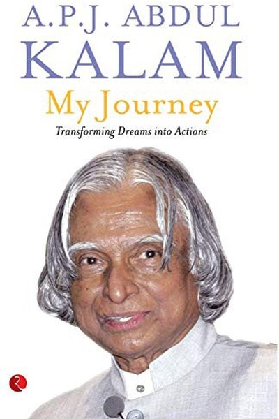

Library › Self-Improvement
My Journey: Transforming Dreams into Actions — Summary & Key Lessons

Charming stories of the people and moments that shaped India's People's President.
📖 OPEN THE FULL INTERACTIVE BREAKDOWN →🌐 Read it in Hindi, Hinglish, Gujarati, Tamil & 22 more languages — free, with audio.
💡 The Big Idea
Behind every great life are ordinary people who shaped it — a father's integrity, a mother's patience, a teacher's belief, a stranger's kindness. Kalam's final memoir is a gratitude tour of those moments: how small acts of character in childhood became the values of a presidency. His lesson: greatness is not built in grand gestures but in the quiet dignity of everyday choices, and no one achieves anything alone.
🧠 The 6 Key Lessons
Lesson 1: Your Family Is Your First University
The Roots
Kalam's father, a boatman and imam, was unlettered but wise; his mother ran the house with quiet generosity. From them he learned integrity, compassion and the dignity of ordinary work. His point: values are not taught in lectures — they are absorbed from the people around you. The first teachers are the ones who never call themselves teachers.
📖 Example: His father's refusal to accept more than his due, and his mother's habit of sharing food with the needy, became the template of Kalam's own conduct as President. The practical edge: 'your family is your first university' is not a one-time decision — it's a… Read the full example →
⚡ Do this: List three values you absorbed from family. Write one way each shows up in your decisions today.
Lesson 2: Teachers See the Person You Can Become
The Mentors
Kalam names the teachers who believed in him — the headmaster who praised his handwriting, the professor who pushed him toward aeronautics. A single sentence of encouragement at the right moment redirected his life. His lesson: you are partly the sum of what your mentors saw in you — and you owe that sight to someone else.
📖 Example: Kalam often said that one teacher's 'you can do better' shaped his entire trajectory — and he spent his life being that teacher for millions of students. Here's the part that usually gets missed: 'teachers see the person you can become' works quietly. You… Read the full example →
⚡ Do this: Write a note of gratitude to one teacher or mentor who changed your direction — and send it.
Lesson 3: Ordinary People Carry Extraordinary Dignity
The Encounters
The memoir is full of strangers — a boatman, a shopkeeper, a farmer — whose quiet competence and dignity moved Kalam. His point: never mistake a person's station for their worth. The people who build and sustain a nation are rarely in the news. Learning to see and honour them is a leadership skill.
📖 Example: Kalam describes a nameless ferryman whose skill and calm impressed him more than many executives he later met. The real test of this lesson is a bad day: the principle that survives a crisis, a tight deadline and a doubting colleague is the one that's… Read the full example →
⚡ Do this: This week, notice one 'invisible' person whose work you depend on — and acknowledge them specifically.
Lesson 4: Small Acts of Kindness Compound
The Kindness
Kalam's memories are full of small generosities — a relative who hosted him, a stranger who guided him, a friend who shared food. His lesson: you never know which small kindness will become someone's turning point. Kindness is the most underrated infrastructure of a life.
📖 Example: A neighbour's small help during his early days in Rameswaram became a memory Kalam carried into his old age — proof that kindness is remembered long after the event. In practice, 'small acts of kindness compound' shows up in tiny daily choices long before it… Read the full example →
⚡ Do this: Do one small, unsolicited kindness today — and don't mention it to anyone.
Lesson 5: Dreams Need Deadlines and Actions
The Transformation
The title's promise: dreams become real only through actions. Kalam's method was always the same — a vivid picture of the goal, a plan with milestones, and relentless daily work. He called it 'transforming dreams into actions': the dream sets the direction, but the action does the walking.
📖 Example: His dream of India as a space power became real through decades of unglamorous lab work, test failures and re-runs — not through the dream itself. Most people nod at this principle and change nothing. The gap between agreeing and acting is where the whole… Read the full example →
⚡ Do this: Take one dream you've been holding. Give it a deadline and one concrete action to start this week.
Lesson 6: Serve, Then Lead
The Calling
Kalam's definition of a fulfilled life: be useful. His final years were spent with students — teaching, answering letters, speaking at schools — because he believed the highest use of his knowledge was passing it on. His lesson: the purpose of success is not to accumulate but to serve. Leadership is just service with a bigger platform.
📖 Example: He collapsed and died while giving a lecture to students at IIM Shillong — a life that ended exactly as it was lived: serving. The uncomfortable truth about this lesson: it requires doing the boring version first — the unglamorous reps that nobody claps for. Read the full example →
⚡ Do this: Identify one skill you have that someone younger needs. Teach it to one person this month, free.
✅ 5-Step Action Plan
- Send gratitude to one mentor or teacher who shaped you.
- Acknowledge one invisible worker whose effort you depend on.
- Do one unmentioned act of kindness today.
- Give your dream a deadline and a first action.
- Teach one skill to someone this month, free.
⚠️ When This Doesn't Work
The memoir's gratitude and kindness are real — and they can quietly license passivity: 'be grateful for what you have' can become an excuse to accept what you shouldn't. Steve Jobs was told to accept his cancer 'holistically' by people who meant well, and the delay in conventional treatment is a documented part of his death. Gratitude for the present must coexist with aggressive action on what can be fixed. Kalam's own life balanced both; the caveat is that warmth without agency is just acceptance with good manners.
💀 The Graveyard Proves It
🍏 Steve Jobs — Nine Months of Fruit Juice vs. Cancer. Burn: Possibly his life. Read the full case study →
💬 Best Quotes from My Journey: Transforming Dreams into Actions
- “The best way to find yourself is to lose yourself in the service of others.”
- “Excellence is a continuous process and not an accident.”
- “Gratitude is the most beautiful thing in the human heart.”
Interactive version: mark lessons as read, listen in your language, share quote cards.